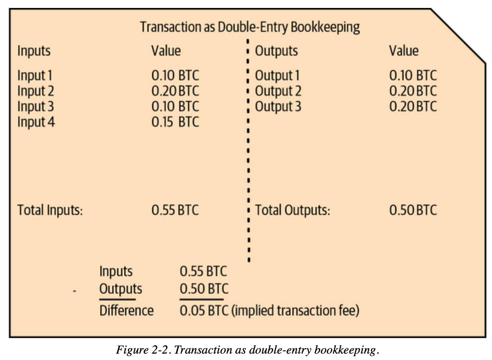

第03讲：比特币交易基础
💡 自学入门
Web3不是一件容易的事，作为一个刚刚入门 Web3 的新人，梳理一下最简单直观的Web3小白入门教程。整合开源社区优质资源，为大家从入门到精通 Web3 指路。每周更新 1-3 讲。欢迎关注我的推特：@bhbtc1337
进入微信交流群请填表：表格链接
文章开源在 GitHub：Get-Started-with-Web3
目录
- 前言：为什么银行的记账方式不适合比特币？
- UTXO模型：现金vs银行账户的哲学
- 交易结构：数字化的现金流转
- 输入与输出：钱从哪里来到哪里去
- 交易验证：数学如何保证安全
- 实际操作：手把手创建交易
- 常见问题
- 结语
前言：为什么银行的记账方式不适合比特币？
想象你在管理一个完全没有信任的环境中的资金流转——比如一群互不认识的人之间要记录借贷关系，但没有任何中央机构来监督。
传统银行方式：
Alice账户：余额 100 BTC
Bob账户：余额 50 BTC
Alice转给Bob 10 BTC：
Alice账户：100 - 10 = 90 BTC ✅
Bob账户：50 + 10 = 60 BTC ✅
问题来了：
- 谁来保证Alice真的有100 BTC？
- 谁来防止Alice同时告诉多个人"我有100 BTC"？
- 如果没有银行，如何防止双重支付？
比特币的解决方案：不记录余额，只记录现金流转
就像用现金一样：
- 你口袋里有几张纸币，每张都有编号
- 要花钱时，必须拿出具体的纸币
- 别人能验证这张纸币确实是你的，且没有被花掉过
这就是比特币的UTXO（未花费交易输出）模型的核心思想。
UTXO模型：现金vs银行账户的哲学
为什么选择"现金模式"？
银行账户模式的问题：
- 需要中央权威维护账户余额
- 容易出现双重支付（同一笔钱花两次）
- 需要复杂的锁定和同步机制
- 难以在分布式环境中达成共识
现金模式的优势：
- 每张"纸币"都有独立身份
- 花掉就销毁，无法重复使用
- 容易验证：检查纸币是否存在且未使用
- 天然防止双重支付
UTXO模型详解
核心概念：
UTXO = 一张还没花掉的"数字纸币"
每个UTXO包含：
- 金额：这张"纸币"值多少钱
- 锁定条件：谁能花掉这张"纸币"
实际例子：
Alice的"钱包"里有：
- UTXO1: 30 BTC（来自工资）
- UTXO2: 70 BTC（来自投资收益）
总财富：100 BTC
Alice要给Bob转50 BTC：
❌ 不能直接"减少余额"
✅ 必须选择具体的UTXO来花费

转账过程：数字"破钱找零"
场景：Alice用70 BTC的UTXO买50 BTC的东西
{
"inputs": [
{"previous_utxo": "70 BTC", "owner": "Alice"}
],
"outputs": [
{"amount": "50 BTC", "recipient": "Bob"},
{"amount": "19.99 BTC", "recipient": "Alice（找零地址）"}
],
"fee": "0.01 BTC"
}
结果：
- Alice的70 BTC UTXO被"销毁"
- 创建两个新UTXO：Bob的50 BTC + Alice的19.99 BTC
- 0.01 BTC给矿工作为手续费
这就像你用100元纸币买了50元东西，收银员：
- 收走你的100元纸币（销毁旧UTXO）
- 给商家50元（新UTXO）
- 找给你49元（找零UTXO）
- 1元作为"服务费"
深入技术细节：UTXO集合管理
UTXO集合的数据结构：
全网UTXO集合 = {
"txid1:vout0": {value: 1.5, scriptPubKey: "..."},
"txid2:vout1": {value: 0.8, scriptPubKey: "..."},
"txid3:vout0": {value: 2.1, scriptPubKey: "..."},
...
}
关键特性：
- 唯一标识：每个UTXO用"交易ID:输出索引"唯一标识
- 原子操作：UTXO要么完全存在，要么完全不存在
- 无需排序：UTXO之间没有先后关系
- 并行验证：不同UTXO可以并行验证
与银行模式对比：
| 特性 | 银行账户模式 | UTXO模式 |
|---|---|---|
| 状态存储 | 账户余额 | 未花费输出集合 |
| 支付方式 | 余额扣减 | UTXO消费+新建 |
| 双重支付防护 | 数据库锁 | 密码学证明 |
| 并行处理 | 困难（需要锁定账户） | 容易（独立UTXO） |
| 隐私保护 | 差（账户关联） | 好（地址分离） |
交易结构：数字化的现金流转
交易的构成要素
每笔比特币交易就像一张复杂的"转账凭证"：

基本组成：
交易 = 输入列表 + 输出列表 + 元数据
具体结构：
{
"txid": "f4184fc596403b9d638783cf57adfe4c75c605f6356fbc91338530e9831e9e16",
"version": 1,
"locktime": 0,
"vin": [输入数组],
"vout": [输出数组]
}
深入技术细节：交易二进制格式
交易的线性化格式：
[4字节版本] [变长输入数量] [输入数据...] [变长输出数量] [输出数据...] [4字节锁定时间]
序列化过程：
- 版本号：定义交易解析规则
- 输入计数：使用变长整数编码
- 输入数据：按顺序序列化每个输入
- 输出计数：使用变长整数编码
- 输出数据：按顺序序列化每个输出
- 锁定时间：4字节时间戳或区块高度
变长整数编码：
< 0xFD: 1字节直接表示
0xFD: 2字节表示
0xFE: 4字节表示
0xFF: 8字节表示
输入与输出：钱从哪里来到哪里去
交易输入：证明"我有钱花"
每个输入就像一张"取钱凭证"：
{
"txid": "0437cd7f8525ceed2324359c2d0ba26006d92d856a9c20fa0241106ee5a597c9",
"vout": 0,
"scriptSig": {
"asm": "3045022100... 0279be667ef9dcbb...",
"hex": "483045022100...21036873b4df35e5b6a967cf7ed4e6a9b6e0a6e2ff7c7b99ee1a8e6a4e4b1b6d6d6d"
},
"sequence": 4294967295
}
字段解释：
- TXID：指向之前交易的"身份证号"
- VOUT：指定要花费的具体输出（第几个）
- ScriptSig：包含数字签名和公钥的"所有权证明"
- Sequence：序列号，用于高级功能
关键理解：ScriptSig的工作原理
ScriptSig = [数字签名] [公钥]
验证过程：
1. 提取公钥，计算对应的比特币地址
2. 检查这个地址是否匹配被花费UTXO的锁定条件
3. 使用公钥验证数字签名是否正确
4. 确认签名对应的是当前交易的内容
交易输出：指定"钱给谁"
每个输出就像一张"存钱凭证"：
{
"value": 0.01000000,
"n": 0,
"scriptPubKey": {
"asm": "OP_DUP OP_HASH160 389ffce9cd9ae88dcc0631e88a821ffdbe9bfe26 OP_EQUALVERIFY OP_CHECKSIG",
"hex": "76a914389ffce9cd9ae88dcc0631e88a821ffdbe9bfe2688ac",
"type": "pubkeyhash",
"address": "16CQL6VEW2RWkZ9WfGS8NhisDVZi5tCZRE"
}
}
字段解释：
- Value：金额（以聪为单位，1 BTC = 100,000,000 聪）
- ScriptPubKey：锁定脚本，定义"解锁条件"
- Address：对应的比特币地址（便于人类理解）
P2PKH锁定脚本详解：
OP_DUP OP_HASH160 <公钥哈希> OP_EQUALVERIFY OP_CHECKSIG
翻译成人话：
"谁能提供一个公钥，使得：
1. 公钥的哈希等于指定值
2. 用这个公钥能验证提供的签名
谁就能花费这笔钱"
为什么需要输入和输出都有脚本？
双重验证机制：
输出脚本（锁）："必须是Alice才能花费"
输入脚本（钥匙）："我是Alice，这是我的证明"
验证过程：
锁 + 钥匙 → 数学运算 → True/False
这就像：
- 输出脚本是保险箱上的锁，定义开锁条件
- 输入脚本是钥匙和密码，证明你能开锁
交易验证：数学如何保证安全
为什么需要验证？
在没有中央银行的世界里，每个人都要自己验证收到的钱是否"真钱"：
需要检查的问题：
- 这笔钱是否真的存在？
- 转账的人是否真的拥有这笔钱？
- 这笔钱之前是否已经被花掉了？
- 签名是否正确？
验证的四个层次
1. 格式验证：基本合规检查
检查项目：
- 交易结构是否完整
- 字段类型是否正确
- 数据长度是否合理
- 是否符合协议规范
2. UTXO验证：钱是否真实存在
检查项目：
- 输入引用的UTXO是否存在于UTXO集合中
- 被引用的UTXO是否已经被花费
- 输入金额是否足够支付输出金额
3. 脚本验证：密码学证明
验证过程：
输入脚本 + 输出脚本 → 脚本引擎执行 → True/False
具体对于P2PKH：
1. 提取输入脚本中的公钥和签名
2. 计算公钥哈希，与输出脚本中的哈希比较
3. 使用公钥验证签名是否正确
4. 确认签名对应当前交易内容
4. 经济规则验证：数学平衡
检查项目：
- 输出总额 ≤ 输入总额
- 矿工费 = 输入总额 - 输出总额 ≥ 0
- 单个输出金额 > 0
- 总金额不超过2100万BTC限制
深入技术：脚本验证引擎
比特币脚本是基于栈的编程语言：
P2PKH验证过程（栈操作）：
初始栈：[]
执行输入脚本：[签名] [公钥]
栈状态：[签名, 公钥]
执行输出脚本：
OP_DUP → [签名, 公钥, 公钥]
OP_HASH160 → [签名, 公钥, 公钥哈希]
<目标哈希> → [签名, 公钥, 公钥哈希, 目标哈希]
OP_EQUALVERIFY → [签名, 公钥] (如果哈希匹配)
OP_CHECKSIG → [True] (如果签名验证成功)
最终：栈顶为True表示验证通过
实际操作：手把手创建交易
第一步：查看可用资金
# 查看UTXO（相当于查看钱包里有哪些纸币）
utxos = rpc.listunspent()
for utxo in utxos:
print(f"UTXO: {utxo['amount']} BTC (来自 {utxo['txid'][:8]}...)")
第二步：选择要花费的UTXO
# 选择足够大的UTXO（相当于选择一张足够大的纸币）
def select_utxo(utxos, target_amount):
for utxo in sorted(utxos, key=lambda x: x['amount'], reverse=True):
if utxo['amount'] >= target_amount:
return utxo
return None
第三步：构造交易
# 创建交易结构
def create_transaction(from_utxo, to_address, amount):
inputs = [{
"txid": from_utxo['txid'],
"vout": from_utxo['vout']
}]
outputs = {
to_address: amount,
"找零地址": from_utxo['amount'] - amount - 0.0001 # 减去矿工费
}
return rpc.createrawtransaction(inputs, outputs)
完整交易流程
详细的交易创建、签名和广播流程请参考：transaction_examples.py
常见问题
❓ 为什么比特币不直接记录账户余额？
技术原因：
- 分布式共识困难：在分布式网络中，维护全局账户状态需要复杂同步
- 双重支付防护：UTXO模型天然防止同一笔钱被花费两次
- 并行处理能力：不同UTXO可以并行验证，提高网络效率
哲学原因：
- 去中心化原则：不需要中央机构维护账户状态
- 透明性：每笔钱的来源去向完全透明
- 隐私保护：可以为每笔交易使用新地址
❓ 什么是交易延展性？
问题描述： 交易ID由整个交易内容计算得出，但签名部分可能被恶意修改而不影响交易有效性，导致相同交易有不同ID。
具体例子：
原始交易：TXID = A1B2C3...
恶意修改签名格式：TXID = D4E5F6...
但两个交易都有效且效果相同
解决方案： SegWit（隔离见证）将签名数据分离，解决了这个问题。
❓ 如何计算合适的矿工费？
费用计算公式：
矿工费 = 交易大小(字节) × 费率(聪/字节)
动态费率策略：
def estimate_fee(target_confirmations):
fee_rate = rpc.estimatesmartfee(target_confirmations)
return fee_rate['feerate'] # BTC/KB
# 不同优先级的费率
urgent_fee = estimate_fee(1) # 下个区块确认
normal_fee = estimate_fee(6) # 1小时内确认
economy_fee = estimate_fee(144) # 24小时内确认
典型交易大小：
- 简单P2PKH交易：~225字节
- 2输入2输出P2PKH：~400字节
- SegWit交易：比传统交易小20-40%
❓ 为什么需要确认？
确认过程：
0确认：交易在内存池中
1确认：交易被打包进区块
6确认：交易被6个区块深度保护
安全性递增：
- 1确认：基本安全，适合小额交易
- 3确认：中等安全，适合中等金额
- 6确认：高安全，交易所和大额交易标准
数学原理： 要逆转一个有n个确认的交易，攻击者需要：
- 控制超过51%的网络算力
- 重新挖掘从该交易开始的所有后续区块
- 成本随确认数指数级增长
❓ 什么是替换交易(RBF)？
Replace-By-Fee机制：
- 在交易未确认时，可以发送更高费用的版本
- 矿工优先打包费用更高的交易
- 原交易会被新交易替换
使用场景：
场景1：费用估算不准确，交易长时间未确认
解决：发送高费用版本，加速确认
场景2：发现转账金额错误
解决：发送更正版本（如果还未确认）
结语
比特币交易系统的设计体现了去中心化系统的智慧：
🏛️ 设计哲学
- 信任最小化：不依赖任何中央权威
- 透明可验证：每笔交易都可独立验证
- 数学保证：用密码学而非人类承诺保证安全
- 经济激励：矿工费机制确保网络运行
🔧 技术特色
- UTXO模型：简单、健壮、并行友好
- 脚本系统：灵活、安全、可扩展
- 费用市场：动态调节、供需平衡
- 确认机制：概率安全、可量化风险
🚀 实际价值
掌握交易基础后，你能够：
- 理解任何比特币钱包的运行原理
- 开发自己的交易分析工具
- 优化交易费用和确认时间
- 为进阶技术（多重签名、SegWit、Taproot）打基础
比特币交易不仅仅是技术，更是一种新的价值交换哲学。它证明了：在数学和密码学的基础上，我们可以构建一个不需要信任中介的全球价值网络。
每一笔交易，都是对"代码即法律"理念的实践；每一次验证，都是对去中心化共识的贡献。
🌟 完整代码示例：本章涉及的所有交易操作代码实现请查看：transaction_examples.py